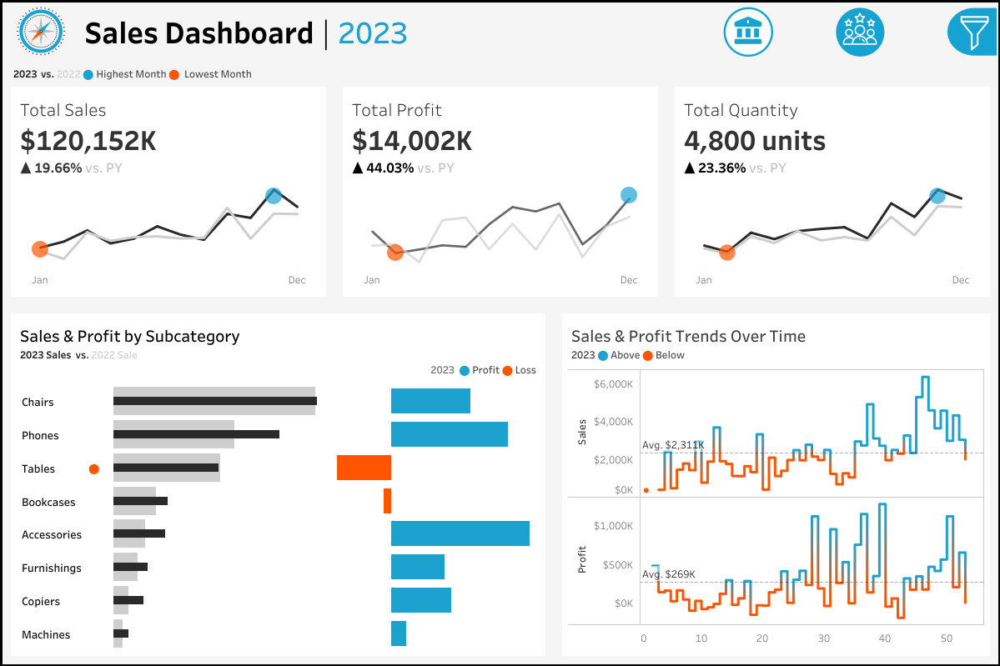
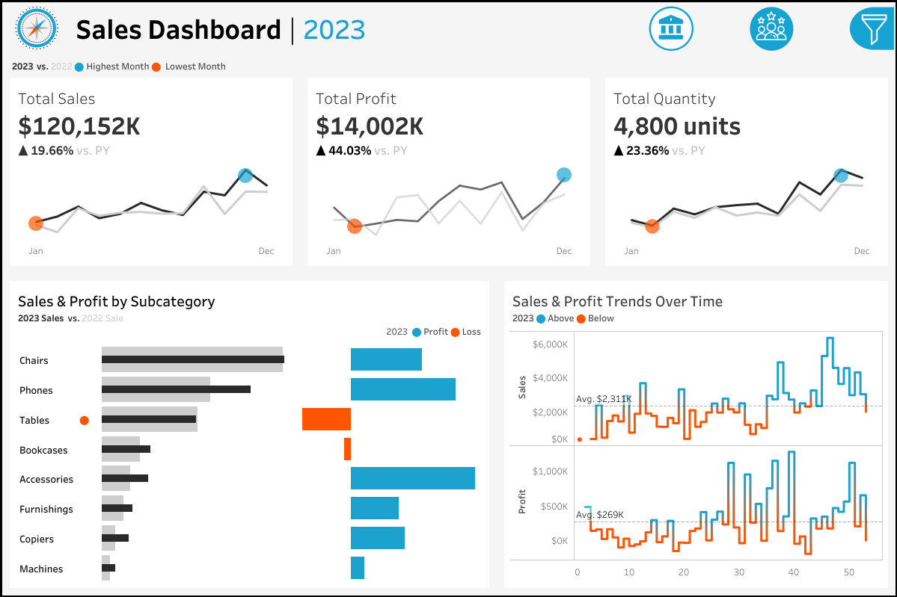
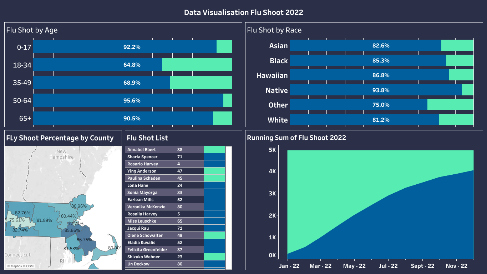
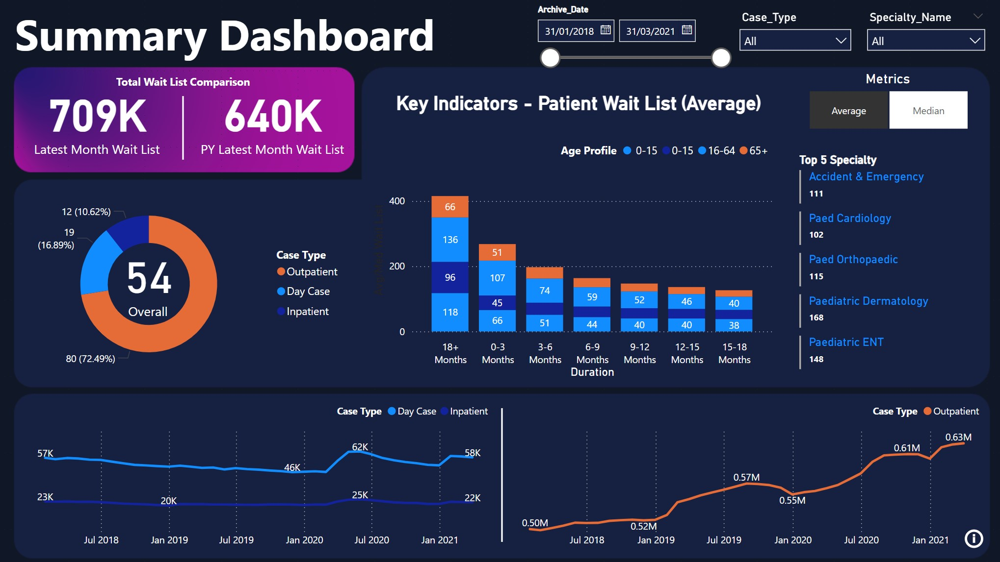
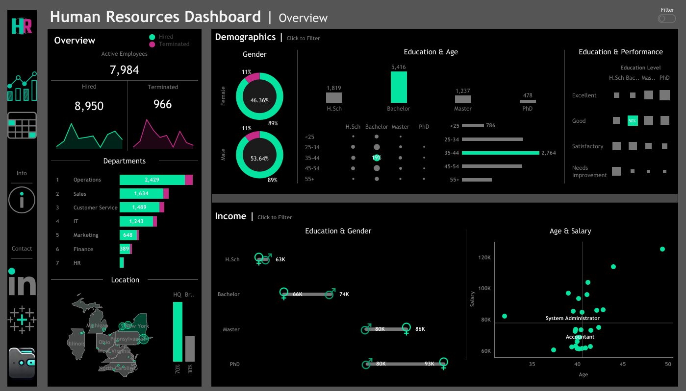
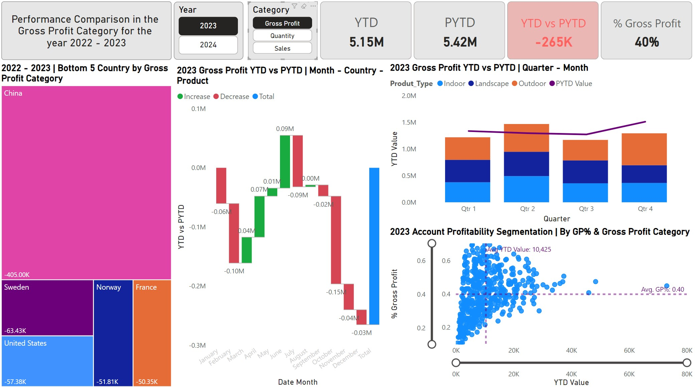

Churn Analysis & Prediction
Skills Used: MySQL, Power BI, Python, PowerPoint, Data Exploration, Machine Learning Model.
Objective: The project provided a better understanding about the reduction of customers from a telecom firm. It examined customer data to identify patterns and reasons behind customer departures. It further leveraged Decision Tree algorithm to better predict future churners.
Execution Plan: Data cleaning and exploration conducted in MySQL.
Python was utilised for predicting future churners using Decision Tree ML. It also examined the features importance of each predictor and the accuracy of the model through confusion matrix.
The data from the cleaning and prediction processes wass loaded to Power BI via MySQL server connection for data visualisation and interpretation.
 

Skills Used: Tableau, Figma, Data Visualisation.
Objective: The project provided actionable insights to optimise sales strategies and key customer groups effectively. It enabled stakeholders to form data-driven decisions by delivering in-depth analysis of
year-over-year sales performance, monthly sales trends and detailed customer segmentation insights.
Execution Plan: The dashboard wireframe was created using Figma. The project used Tableau for data cleaning, manipulation and visualisation.

Skills Used: PostgreSQL, Tableau, Data Exploration & Manupulation, Data Visualisation.
Objective: The project provided actionable insights into patient experiences with hospital services. By evaluating cohort means and survey response rates,
the project aimed to support data-driven improvements in healthcare services and enhance government fund allocation efforts.
Execution Plan: The project began with data cleaning in PostgreSQL, removing duplicates, addressing missing values, and standardizing entries for consistency.
Tableau was leveraged for interactive visualisation, enabling stakeholders to explore key satisfaction metrics and identify areas for improvement in patient care through identification of keywords in the survey questions with the tailor to specific state and hospital size.
Skills Used: SQLite, Data Exploration.
Objective: The project offers actionable insights for health policymakers, helping identify regions with high infection rates, assessing vaccination progress, and revealing potential healthcare needs.
Execution Plan: Data exploration conducted in SQLite, focusing on analysing COVID-19 cases, death, and vaccination data to uncover trends and insights on a global scale. By leveraging SQL techniques such as joins, CTEs, window functions, and temporary tables, the project provides a structured approach to understanding infection rates, mortality percentages, and vaccination progress.

Skills Used: PostgreSQL, Tableau, Data Manipulation, Data Visualisation.
Objective: The project highlighted disparities in vaccination coverage, offering insights into areas with lower immunisation rates, enabling comparisons across counties and demographic groups with multiple different segmentations.
Execution Plan: The project utilised PostgreSQL to extract data from multiple datasets, focusing on flu immunisation rates across Massachusetts counties. Tableau was employed to visualise these immunisation statistics with interative map
for interpretation purposes.

Skills Used: Power BI (Power Query & DAX), Powerpoint.
Objective: The project analysed patient wait lists over two consecutive years using average and median metrics on key indicators such as demographics, case types and treatment durations.
The insights evaluated hospital's current performance and forecast demand, aiming to improve services and supply management to prevent shortages during high-demand periods.
Execution Plan: The presentation layout was crafted using PowerPoint. Power BI facilitated data cleaning and visualisation, involving data transformation and consolidation from multiple sources via Power Query.
Insights were derived from various visualisations, leveraging DAX for deeper analysis, enabling comprehensive examination and informed decision-making.

Skills Used: Draw.io, Tableau.
Objective: The project simulated organisational employee data using the Faker library in Python. It analysed fluctuations in employee numbers over time across various departments and branches.
Additionally, it highlighted significant differences in employee performance and the gender pay gap based on age, educational background, and job title.
Execution Plan: The layout was sketched in Draw.io while Tableau was used to facilitate data transformation and visualisations through the creation of calculated fields.

Skills Used: Power BI (Power Query & DAX)
Objective: The project aimed to compare various categories across different countries, products, and periods for two consecutive years.
The dashboard provided actionable insights into gross profit trends by utilising Power BI, highlighting bottom-performing countries, gross profit change patterns and account profitability segmentation.
These insights enable stakeholders to identify trends, pinpoint areas of concern, and uncover opportunities for improvement in their operations and product lines.
Execution Plan: Power BI facilitated data cleaning and visualisation, involving data transformation and consolidation from multiple tables via Power Query.
Insights were derived from various visualisations, leveraging DAX for deeper analysis, enabling comprehensive examination and informed decision-making.